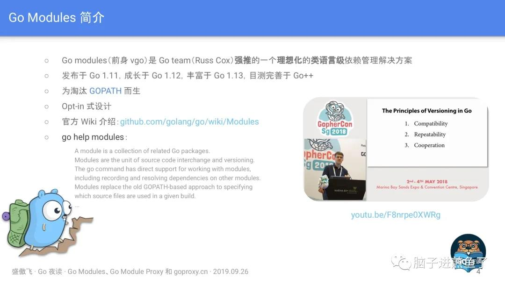
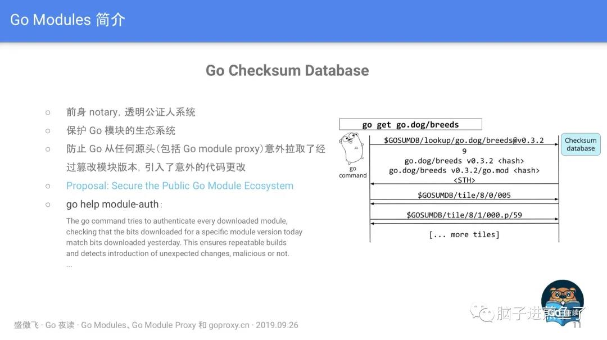
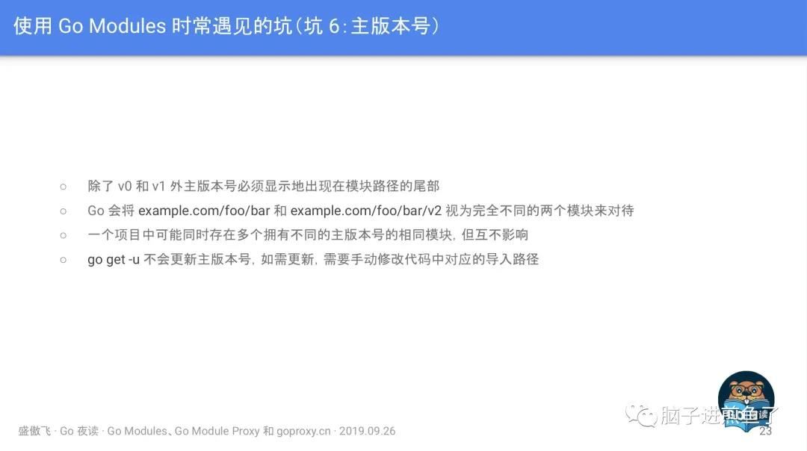
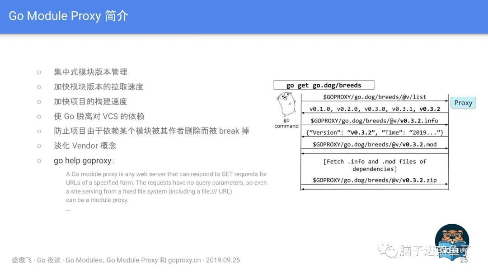

大家好，我是煎鱼。
马上 2021 年了，Go 也即将在明年发布 Go1.16。但 Go Modules 仍然是大家关注的话题之一。早期汇总过傲飞分享的 《Go Modules、Go Module Proxy 和 goproxy.cn》。

今天正式在自己公众号分享出来，希望对大家的学习有所帮助。
前言
Go 1.11 推出的模块（Modules）为 Go 语言开发者打开了一扇新的大门，理想化的依赖管理解决方案使得 Go 语言朝着计算机编程史上的第一个依赖乌托邦（Deptopia）迈进。
随着模块一起推出的还有模块代理协议（Module proxy protocol），通过这个协议我们可以实现 Go 模块代理（Go module proxy），也就是依赖镜像。
Go 1.13 的发布为模块带来了大量的改进，所以模块的扶正就是这次 Go 1.13 发布中开发者能直接感觉到的最大变化。
目录
Go Modules 简介
快速迁移项目至 Go Modules
使用 Go Modules 时常遇见的坑
- 坑 1:判断项目是否启用了 Go Modules
- 坑 2:管理 Go 的环境变量
- 坑 3:从 dep、glide 等迁移至 Go Modules
- 坑 4:拉取私有模块
- 坑 5:更新现有的模块
- 坑 6:主版本号
Go Module Proxy 简介
Goproxy 中国(goproxy.cn)
Go Modules 简介

Go modules (前身 vgo) 是 Go team (Russ Cox) 强推的一个理想化的类语言级依赖管理解决方案，它是和 Go1.11 一同发布的，在 Go1.13 做了大量的优化和调整，目前已经变得比较不错，如果你想用 Go modules，但还停留在 1.11/1.12 版本的话，强烈建议升级。
三个关键字
强推
首先这并不是乱说的，因为 Go modules 确实是被强推出来的，如下：
- 之前：大家都知道在 Go modules 之前还有一个叫 dep 的项目，它也是 Go 的一个官方的实验性项目，目的同样也是为了解决 Go 在依赖管理方面的短板。在 Russ Cox 还没有提出 Go modules 的时候，社区里面几乎所有的人都认为 dep 肯定就是未来 Go 官方的依赖管理解决方案了。
- 后来：谁都没想到半路杀出个程咬金，Russ Cox 义无反顾地推出了 Go modules，这瞬间导致一石激起千层浪，让社区炸了锅。大家一致认为 Go team 实在是太霸道、太独裁了，连个招呼都不打一声。我记得当时有很多人在网上跟 Russ Cox 口水战，各种依赖管理解决方案的专家都冒出来发表意见，讨论范围甚至一度超出了 Go 语言的圈子触及到了其他语言的领域。
理想化
从他强制要求使用语义化版本控制这一点来说就很理想化了，如下：
- Go modules 狠到如果你的 Tag 没有遵循语义化版本控制那么它就会忽略你的 Tag，然后根据你的 Commit 时间和哈希值再为你生成一个假定的符合语义化版本控制的版本号。
- Go modules 还默认认为，只要你的主版本号不变，那这个模块版本肯定就不包含 Breaking changes，因为语义化版本控制就是这么规定的啊。是不是很理想化。
类语言级：
这个关键词其实是我自己瞎编的，我只是单纯地个人认为 Go modules 在设计上就像个语言级特性一样，比如如果你的主版本号发生变更，那么你的代码里的 import path 也得跟着变，它认为主版本号不同的两个模块版本是完全不同的两个模块。此外，Go moduels 在设计上跟 go 整个命令都结合得相当紧密，无处不在，所以我才说它是一个有点儿像语言级的特性，虽然不是太严谨。
推 Go Modules 的人是谁
那么在上文中提到的 Russ Cox 何许人也呢，很多人应该都知道他，他是 Go 这个项目目前代码提交量最多的人，甚至是第二名的两倍还要多。
Russ Cox 还是 Go 现在的掌舵人（大家应该知道之前 Go 的掌舵人是 Rob Pike，但是听说由于他本人不喜欢特朗普执政所以离开了美国，然后他岁数也挺大的了，所以也正在逐渐交权，不过现在还是在参与 Go 的发展）。
Russ Cox 的个人能力相当强，看问题的角度也很独特，这也就是为什么他刚一提出 Go modules 的概念就能引起那么大范围的响应。虽然是被强推的，但事实也证明当下的 Go modules 表现得确实很优秀，所以这表明一定程度上的 “独裁” 还是可以接受的，至少可以保证一个项目能更加专一地朝着一个方向发展。
总之，无论如何 Go modules 现在都成了 Go 语言的一个密不可分的组件。
GOPATH
Go modules 出现的目的之一就是为了解决 GOPATH 的问题，也就相当于是抛弃 GOPATH 了。
Opt-in
Go modules 还处于 Opt-in 阶段，就是你想用就用，不用就不用，不强制你。但是未来很有可能 Go2 就强制使用了。
“module” != “package”
有一点需要纠正，就是“模块”和“包”，也就是 “module” 和 “package” 这两个术语并不是等价的，是 “集合” 跟 “元素” 的关系，“模块” 包含 “包”，“包” 属于 “模块”，一个 “模块” 是零个、一个或多个 “包” 的集合。
Go Modules 相关属性
go.mod
1 | module example.com/foobar |
go.mod 是启用了 Go moduels 的项目所必须的最重要的文件，它描述了当前项目（也就是当前模块）的元信息，每一行都以一个动词开头，目前有以下 5 个动词:
- module：用于定义当前项目的模块路径。
- go：用于设置预期的 Go 版本。
- require：用于设置一个特定的模块版本。
- exclude：用于从使用中排除一个特定的模块版本。
- replace：用于将一个模块版本替换为另外一个模块版本。
这里的填写格式基本为包引用路径+版本号，另外比较特殊的是 go $version，目前从 Go1.13 的代码里来看，还只是个标识作用，暂时未知未来是否有更大的作用。
go.sum
go.sum 是类似于比如 dep 的 Gopkg.lock 的一类文件，它详细罗列了当前项目直接或间接依赖的所有模块版本，并写明了那些模块版本的 SHA-256 哈希值以备 Go 在今后的操作中保证项目所依赖的那些模块版本不会被篡改。
1 | example.com/apple v0.1.2 h1:WXkYYl6Yr3qBf1K79EBnL4mak0OimBfB0XUf9Vl28OQ= |
我们可以看到一个模块路径可能有如下两种：
1 | example.com/apple v0.1.2 h1:WXkYYl6Yr3qBf1K79EBnL4mak0OimBfB0XUf9Vl28OQ= |
前者为 Go modules 打包整个模块包文件 zip 后再进行 hash 值，而后者为针对 go.mod 的 hash 值。他们两者，要不就是同时存在，要不就是只存在 go.mod hash。
那什么情况下会不存在 zip hash 呢，就是当 Go 认为肯定用不到某个模块版本的时候就会省略它的 zip hash，就会出现不存在 zip hash，只存在 go.mod hash 的情况。
GO111MODULE
这个环境变量主要是 Go modules 的开关，主要有以下参数：
- auto：只在项目包含了 go.mod 文件时启用 Go modules，在 Go 1.13 中仍然是默认值，详见 ：golang.org/issue/31857。
- on：无脑启用 Go modules，推荐设置，未来版本中的默认值，让 GOPATH 从此成为历史。
- off：禁用 Go modules。
GOPROXY
这个环境变量主要是用于设置 Go 模块代理，主要如下：
它的值是一个以英文逗号 “,” 分割的 Go module proxy 列表（稍后讲解）
- 作用：用于使 Go 在后续拉取模块版本时能够脱离传统的 VCS 方式从镜像站点快速拉取。它拥有一个默认：
https://proxy.golang.org,direct，但很可惜proxy.golang.org在中国无法访问，故而建议使用goproxy.cn作为替代，可以执行语句：go env -w GOPROXY=https://goproxy.cn,direct。 - 设置为 “off” ：禁止 Go 在后续操作中使用任 何 Go module proxy。
- 作用：用于使 Go 在后续拉取模块版本时能够脱离传统的 VCS 方式从镜像站点快速拉取。它拥有一个默认：
刚刚在上面，我们可以发现值列表中有 “direct” ，它又有什么作用呢。其实值列表中的 “direct” 为特殊指示符，用于指示 Go 回源到模块版本的源地址去抓取(比如 GitHub 等)，当值列表中上一个 Go module proxy 返回 404 或 410 错误时，Go 自动尝试列表中的下一个，遇见 “direct” 时回源，遇见 EOF 时终止并抛出类似 “invalid version: unknown revision…” 的错误。
GOSUMDB
它的值是一个 Go checksum database，用于使 Go 在拉取模块版本时(无论是从源站拉取还是通过 Go module proxy 拉取)保证拉取到的模块版本数据未经篡改，也可以是“off”即禁止 Go 在后续操作中校验模块版本
- 格式 1：
<SUMDB_NAME>+<PUBLIC_KEY>。 - 格式 2：
<SUMDB_NAME>+<PUBLIC_KEY> <SUMDB_URL>。 - 拥有默认值：
sum.golang.org(之所以没有按照上面的格式是因为 Go 对默认值做了特殊处理)。 - 可被 Go module proxy 代理 (详见：Proxying a Checksum Database)。
sum.golang.org在中国无法访问，故而更加建议将 GOPROXY 设置为goproxy.cn，因为goproxy.cn支持代理sum.golang.org。
Go Checksum Database
Go checksum database 主要用于保护 Go 不会从任何源头拉到被篡改过的非法 Go 模块版本，其作用（左）和工作机制（右）如下图：

如果有兴趣的小伙伴可以看看 Proposal: Secure the Public Go Module Ecosystem，有详细介绍其算法机制，如果想简单一点，查看 go help module-auth 也是一个不错的选择。
GONOPROXY/GONOSUMDB/GOPRIVATE
这三个环境变量都是用在当前项目依赖了私有模块，也就是依赖了由 GOPROXY 指定的 Go module proxy 或由 GOSUMDB 指定 Go checksum database 无法访问到的模块时的场景
- 它们三个的值都是一个以英文逗号 “,” 分割的模块路径前缀，匹配规则同 path.Match。
- 其中 GOPRIVATE 较为特殊，它的值将作为 GONOPROXY 和 GONOSUMDB 的默认值，所以建议的最佳姿势是只是用 GOPRIVATE。
在使用上来讲，比如 GOPRIVATE=*.corp.example.com 表示所有模块路径以 corp.example.com 的下一级域名 (如 team1.corp.example.com) 为前缀的模块版本都将不经过 Go module proxy 和 Go checksum database，需要注意的是不包括 corp.example.com 本身。
Global Caching
这个主要是针对 Go modules 的全局缓存数据说明，如下：
- 同一个模块版本的数据只缓存一份，所有其他模块共享使用。
- 目前所有模块版本数据均缓存在
$GOPATH/pkg/mod和$GOPATH/pkg/sum下，未来或将移至$GOCACHE/mod和$GOCACHE/sum下( 可能会在当$GOPATH被淘汰后)。 - 可以使用
go clean -modcache清理所有已缓存的模块版本数据。
另外在 Go1.11 之后 GOCACHE 已经不允许设置为 off 了，我想着这也是为了模块数据缓存移动位置做准备，因此大家应该尽快做好适配。
快速迁移项目至 Go Modules
第一步: 升级到 Go 1.13。
第二步: 让 GOPATH 从你的脑海中完全消失，早一步踏入未来。
- 修改 GOBIN 路径（可选）：
go env -w GOBIN=$HOME/bin。 - 打开 Go modules：
go env -w GO111MODULE=on。 - 设置 GOPROXY：
go env -w GOPROXY=https://goproxy.cn,direct# 在中国是必须的，因为它的默认值被墙了。
- 修改 GOBIN 路径（可选）：
第三步(可选): 按照你喜欢的目录结构重新组织你的所有项目。
第四步: 在你项目的根目录下执行
go mod init <OPTIONAL_MODULE_PATH>以生成 go.mod 文件。第五步: 想办法说服你身边所有的人都去走一下前四步。
迁移后 go get 行为的改变
用
go help module-get和go help gopath-get分别去了解 Go modules 启用和未启用两种状态下的 go get 的行为用
go get拉取新的依赖- 拉取最新的版本(优先择取 tag)：
go get golang.org/x/text@latest - 拉取
master分支的最新 commit：go get golang.org/x/text@master - 拉取 tag 为 v0.3.2 的 commit：
go get golang.org/x/text@v0.3.2 - 拉取 hash 为 342b231 的 commit，最终会被转换为 v0.3.2：
go get golang.org/x/text@342b2e - 用
go get -u更新现有的依赖 - 用
go mod download下载 go.mod 文件中指明的所有依赖 - 用
go mod tidy整理现有的依赖 - 用
go mod graph查看现有的依赖结构 - 用
go mod init生成 go.mod 文件 (Go 1.13 中唯一一个可以生成 go.mod 文件的子命令)
- 拉取最新的版本(优先择取 tag)：
用
go mod edit编辑 go.mod 文件用
go mod vendor导出现有的所有依赖 (事实上 Go modules 正在淡化 Vendor 的概念)用
go mod verify校验一个模块是否被篡改过
这里我们注意到有两点比较特别，分别是：
- 第一点：为什么 “拉取 hash 为 342b231 的 commit，最终会被转换为 v0.3.2” 呢。这是因为虽然我们设置了拉取 @342b2e commit，但是因为 Go modules 会与 tag 进行对比，若发现对应的 commit 与 tag 有关联，则进行转换。
- 第二点：为什么不建议使用
go mod vendor，因为 Go modules 正在淡化 Vendor 的概念，很有可能 Go2 就去掉了。
使用 Go Modules 时常遇见的坑
坑 1: 判断项目是否启用了 Go Modules
坑 2: 管理 Go 的环境变量
这里主要是提到 Go1.13 新增了 go env -w 用于写入环境变量，而写入的地方是 os.UserConfigDir 所返回的路径，需要注意的是 go env -w 不会覆写。
坑 3: 从 dep、glide 等迁移至 Go Modules
这里主要是指从旧有的依赖包管理工具（dep/glide 等）进行迁移时，因为 BUG 的原因会导致不经过 GOPROXY 的代理，解决方法有如下两个：
- 手动创建一个 go.mod 文件，再执行 go mod tidy 进行补充。
- 上代理，相当于不使用 GOPROXY 了。
坑 4:拉取私有模块
这里主要想涉及两块知识点，如下：
- GOPROXY 是无权访问到任何人的私有模块的，所以你放心，安全性没问题。
- GOPROXY 除了设置模块代理的地址以外，还需要增加 “direct” 特殊标识才可以成功拉取私有库。
坑 5:更新现有的模块
坑 6:主版本号

Go Module Proxy 简介

在这里再次强调了 Go Module Proxy 的作用（图左），以及其对应的协议交互流程（图右），有兴趣的小伙伴可以认真看一下。
Q&A
Q：如何解决 Go 1.13 在从 GitLab 拉取模块版本时遇到的，Go 错误地按照非期望值的路径寻找目标模块版本结果致使最终目标模块拉取失败的问题？
A：GitLab 中配合 goget 而设置的 <meta> 存在些许问题，导致 Go 1.13 错误地识别了模块的具体路径，这是个 Bug，据说在 GitLab 的新版本中已经被修复了，详细内容可以看 https://github.com/golang/go/issues/34094 这个 Issue。然后目前的解决办法的话除了升级 GitLab 的版本外，还可以参考 https://github.com/developer-learning/night-reading-go/issues/468#issuecomment-535850154 这条回复。
Q：使用 Go modules 时可以同时依赖同一个模块的不同的两个或者多个小版本（修订版本号不同）吗？
A：不可以的，Go modules 只可以同时依赖一个模块的不同的两个或者多个大版本（主版本号不同）。比如可以同时依赖 example.com/foobar@v1.2.3 和 example.com/foobar/v2@v2.3.4，因为他们的模块路径（module path）不同，Go modules 规定主版本号不是 v0 或者 v1 时，那么主版本号必须显式地出现在模块路径的尾部。但是，同时依赖两个或者多个小版本是不支持的。比如如果模块 A 同时直接依赖了模块 B 和模块 C，且模块 A 直接依赖的是模块 C 的 v1.0.0 版本，然后模块 B 直接依赖的是模块 C 的 v1.0.1 版本，那么最终 Go modules 会为模块 A 选用模块 C 的 v1.0.1 版本而不是模块 A 的 go.mod 文件中指明的 v1.0.0 版本。
这是因为 Go modules 认为只要主版本号不变，那么剩下的都可以直接升级采用最新的。但是如果采用了最新的结果导致项目 Break 掉了，那么 Go modules 就会 Fallback 到上一个老的版本，比如在前面的例子中就会 Fallback 到 v1.0.0 版本。
Q：在 go.sum 文件中的一个模块版本的 Hash 校验数据什么情况下会成对出现，什么情况下只会存在一行？
A：通常情况下，在 go.sum 文件中的一个模块版本的 Hash 校验数据会有两行，前一行是该模块的 ZIP 文件的 Hash 校验数据，后一行是该模块的 go.mod 文件的 Hash 校验数据。但是也有些情况下只会出现一行该模块的 go.mod 文件的 Hash 校验数据，而不包含该模块的 ZIP 文件本身的 Hash 校验数据，这个情况发生在 Go modules 判定为你当前这个项目完全用不到该模块，根本也不会下载该模块的 ZIP 文件，所以就没必要对其作出 Hash 校验保证，只需要对该模块的 go.mod 文件作出 Hash 校验保证即可，因为 go.mod 文件是用得着的，在深入挖取项目依赖的时候要用。
Q：能不能更详细地讲解一下 go.mod 文件中的 replace 动词的行为以及用法？
A：这个 replace 动词的作用是把一个“模块版本”替换为另外一个“模块版本”，这是“模块版本”和“模块版本（module path）”之间的替换，“=>”标识符前面的内容是待替换的“模块版本”的“模块路径”，后面的内容是要替换的目标“模块版本”的所在地，即路径，这个路径可以是一个本地磁盘的相对路径，也可以是一个本地磁盘的绝对路径，还可以是一个网络路径，但是这个目标路径并不会在今后你的项目代码中作为你“导入路径（import path）”出现，代码里的“导入路径”还是得以你替换成的这个目标“模块版本”的“模块路径”作为前缀。
另外需要注意，Go modules 是不支持在 “导入路径” 里写相对路径的。举个例子，如果项目 A 依赖了模块 B，比如模块 B 的“模块路径”是 example.com/b，然后它在的磁盘路径是 ~/b，在项目 A 里的 go.mod 文件中你有一行 replace example.com/b=>~/b，然后在项目 A 里的代码中的“导入路基”就是 import”example.com/b”，而不是 import”~/b”，剩下的工作是 Go modules 帮你自动完成了的。
然后就是我在分享中也提到了， exclude 和 replace 这两个动词只作用于当前主模块，也就是当前项目，它所依赖的那些其他模块版本中如果出现了你待替换的那个模块版本的话，Go modules 还是会为你依赖的那个模块版本去拉取你的这个待替换的模块版本。
举个例子，比如项目 A 直接依赖了模块 B 和模块 C，然后模块 B 也直接依赖了模块 C，那么你在项目 A 中的 go.mod 文件里的 replace c=>~/some/path/c 是只会影响项目 A 里写的代码中，而模块 B 所用到的还是你 replace 之前的那个 c，并不是你替换成的 ~/some/path/c 这个。
总结
在 Go1.13 发布后，接触 Go modules 和 Go module proxy 的人越来越多，经常在各种群看到各种小伙伴在咨询，包括我自己也贡献了好几枚 “坑”。
因此我觉得傲飞的这一次 《Go Modules、Go Module Proxy 和 goproxy.cn》的技术分享，非常的有实践意义。
如果后续大家还有什么建议或问题，欢迎随时来讨论。
进一步阅读
- night-reading-go/issues/468
- B站：【Go 夜读】第 61 期 Go Modules、Go Module Proxy 和 goproxy.cn
- youtube：【Go 夜读】第 61 期 Go Modules、Go Module Proxy 和 goproxy.cn